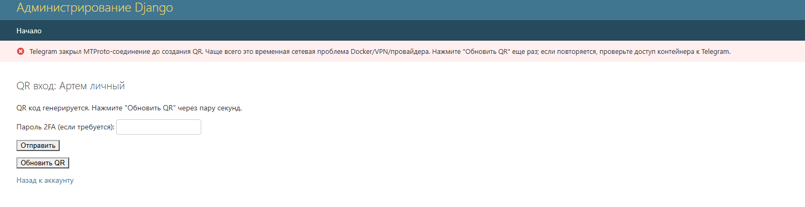

Улучшение админки Omnichannel CRM
Текущее состояние

Стандартная Django Admin работала, но сохраняла Telegram-терминологию и показывала смешанные поля интеграций.
Реализованные улучшения
1. Нейтральная терминология
«Telegram аккаунты» заменены на «Аккаунты мессенджеров», WhatsApp Business — на WhatsApp, а технические Telegram ID в общих списках названы ID провайдера.
Каналы и сообщения └─ Аккаунты мессенджеров ├─ Telegram — личный аккаунт ├─ Telegram — бот ├─ MAX └─ WhatsApp
2. Информативный список
В список вынесены канал подключения, idInstance/телефон/username, последняя активность и краткая последняя ошибка. Добавлены сортировка, поиск и удобный размер страницы.
3. Поля по выбранному каналу
На странице существующего аккаунта показываются только соответствующие поля: Telethon, бот или GREEN API. Это уменьшает риск заполнить не тот блок.
Что уже работало хорошо
Сохраняются стандартные действия Django Admin, фильтры по типу и статусу, отдельные QR/OTP-действия и защищённые секретные поля интеграций.
Источники
Django ModelAdmin — list_display, list_filter, get_fieldsets и заголовки AdminSite.